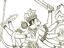

Hinduism Index Previous Next

The Ramayana and Mahabharata, by Romesh C. Dutt, [1899], at
In the concluding portion of the Uttara or Supplemental Book, the descendants of Rama and his brothers are described as the founders of the great cities and kingdoms which flourished in Western India in the fourth and fifth centuries before the Christian Era.
Bharat had two sons, Taksha and Pushkala. The former founded Taksha-sila, to the east of the Indus, and known to Alexander and the Greeks as Taxila. The latter founded Pushkala-vati, to the west of the Indus, and known to Alexander and the Greeks as Peukelaotis. Thus the sons of Bharat are said to have founded kingdoms which flourished on either side of the Indus river in the fourth century before Christ.
Lakshman had two sons, Angada and Chandraketu. The former founded the kingdom of Karupada, and the latter founded the city of Chandrakanti in the Malwa country.
Satrughna had two sons, Suvahu and Satrughati. The former became king of Mathura, and the latter ruled in Vidisha.
Rama had two sons, Lava and Kusa. The former ruled in Sravasti, which was the capital of Oudh at the time of the Buddha in the fifth and sixth centuries before Christ. The latter founded Kusavati at the foot of the Vindhya mountains.
The death of Rama and his brothers was in accordance with Hindu ideas of the death of the righteous. Lakshman died under somewhat peculiar circumstances. A messenger from heaven sought a secret conference with Rama, and Rama placed Lakshman at the gate, with strict injunctions that whoever intruded on the private conference should be slain. Lakshman himself had to disturb the conference by the solicitation of the celestial rishi Durvasa, who always appears on earth to create mischief. And true to the orders passed by Rama, he surrendered his life by penances, and went to heaven.
In the fulness of time, Rama and his other brothers left Ayodhya, crossed the Sarayu, surrendered their mortal life, and entered heaven.